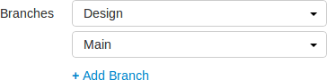
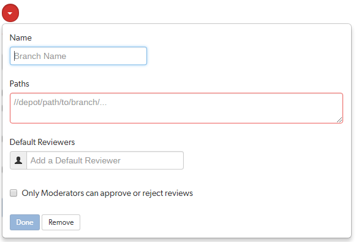

|

|
Click Edit.
Next to the Branches label, a drop-down button for each branch is displayed, and + Add Branch.


Enter one or more branch paths in the Paths field, one per line.
Each branch path should be expressed in depot syntax. Wildcards should not be used; the only exception is the branch path can end with the Helix Core wildcard ...
For example: //depot/main/swarm/...
For more information, see File Specifications in P4 Command Reference.
Optional: specify Default Reviewers for the project branch.
This field auto-suggests users, and groups within Helix server as you type (up to a combined limit of 20 entries). Click on the user or group to add them as a default reviewer. Each time a new review is created, the default reviewers will be added to the review.
Click the X icon to the right of the userid or groupid to remove that default reviewer from the default reviewers list.
When a review is part of multiple projects/project branches:
Example: A review is created and it is part of Project A, Project B, and Project Branch b.
Project A: default reviewer X is an Optional reviewer
Project B: default reviewer X is an Optional reviewer
Project Branch b: default reviewer X is a Required reviewer
Result: default reviewer X is added to the review as a Required reviewer
If users or groups are @mentioned in a new changelist description that includes #review, they will be added to the review as reviewers. If any of these reviewers are already specified as default reviewers they will not be added to the review again, the reviewer's most restrictive reviewer option is used for the review.
If a default reviewer is deleted from Helix server they will not be added to new reviews.
Optional: check the Only Moderators can approve or reject reviews checkbox.
When checked, a field is displayed, allowing you to add a new moderator. The field auto-suggests groups and users within the Helix Versioning Engine as you type.
If a group is specified as a moderator, all of the members of that group have the same moderator privileges for that project branch as if they were added individually.
Once the branch specification is complete and the project has been saved, changing the state of any review associated with this moderated branch is restricted as follows:
The review's author, when she is not a moderator, can change the review's state to Needs Review, Needs Revision, Archived, and can attach committed changelists.
Normally, the review's author cannot change the review's state to Approved or Rejected on moderated branches. However, authors that are also moderators have moderator privileges, and may approve or reject their own review.
When disable_self_approve is enabled, authors who are moderators (or even users with admin privileges) cannot approve their own reviews.
For the review's author and project members, if a review is not in one of their permitted states, for example if the review's state is Rejected, they cannot transition the review to another state.
These restrictions have no effect on who can start a review.
Click Done to accept your branch specification.
Once the branch definition has completed, if any moderators were specified, the number of moderators for that branch is displayed in the list of branches.
The project name does not need to be included in the branch name; Swarm displays the project name with the branch name when appropriate.
| |
|